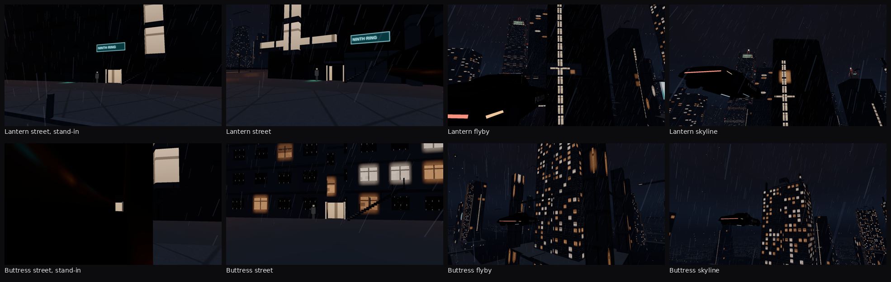

What changed
B1 rolled both families and then built a monolith, because the lantern cross only read from a roof camera and the buttress core read as a blank wall from the fly. The roll is unchanged. The lantern’s r.chance(0.35) still runs in that same place, and when it succeeds the holo sign hangs on the lantern. Downtown still finds 42 lanterns and 59 buttresses. The harness labels a lot by the kind it rolled (sourceKind), which matches the mass now that the stand-in is gone.
The lantern is a dark slab with the cross on the street face. A 2.4 m glow slit runs from one storey above the door to nine tenths of the height. Lips that cross it are 1.55 m, under one 4.5 m glow cell. A 6.2 m solid belt at mid height is the bar that still reads on a flyby. The roof is a cruciform parapet, a plant, and a short mast. Street level keeps the flight, a pale plate behind the treads, a door brow, and solid piers beside the run.
The buttress core is megablock at a dark tint, so the street and the fly both see a floor grid. Corner piers stay in the same mass, with 1.45 m ties and a 1.55 m cap. The roof is a cage: a pad, four posts, a ring, and a mast off the crown. A door brow and two base piers sit clear of the flight. There is no glow crown on either family.
Night frames
Ultra, rain, 21:30. The stand-in column is the monolith that B1 placed on these lots. The other three columns are the families as placed.

Critics
Three readers, each with the six frames and no score from the others. Blind scores whether the tower is the subject. Film scores the downtown night: grey-brown concrete, rare warm windows, a cyan lease sign, rain. Scale scores the 1.80 m figure against the 2.2 m door and the 3.6 m flight, and does not treat the near spinner as a floor.
| Frame | Blind | Film | Scale |
|---|---|---|---|
| Lantern street | 8 | 9 | 8 |
| Lantern flyby | 7 | 8 | 9 |
| Lantern skyline | 8 | 8 | 9 |
| Buttress street | 8 | 7 | 9 |
| Buttress flyby | 9 | 9 | 9 |
| Buttress skyline | 9 | 8 | 9 |
Lowest scores are the lantern fly (blind 7) and the buttress street (film 7). Both families stay placed.
Checks
Envelope IoU is the harness diagram, not the picture test. Lantern 0.994, buttress 0.811. The fail line is still 0.45. A 1 km financial patch stays under the fabric ceiling (top 304.5 m). Textures added: 0. Geometry with the harness camera in Long Beach:
| Tier | Textures | Geometry | Boxes in the patch | Triangles |
|---|---|---|---|---|
| Low | 0 MB | 1.59 MB | 617 | 9,296 |
| Medium | 0 MB | 4.52 MB | 1,618 | 19,306 |
| High / ultra | 0 MB | 5.15 MB | 1,832 | 21,446 |
| Far impostor | 500 | 5,300 |
Tower boxes remain instances of the shared kit. Low keeps the masses, including the cage and the parapet. Medium keeps fins and decks. High and ultra add the roof plant and the antennas. Metres do not change. npm run memory:check, npm run lighting:check, npm run stray, and npm run build passed. Glow is Style.Glow on the city shader, scaled by the window nits. No punctual light was added.
Left alone
- The city glow shader, the facade cell tables, and the other six families.
- The Kite Obelisk reserve, LAPD, City Hall, Wallace, the basin, and the human harness.
- Lot assignment. A later lot still sees the same random stream.